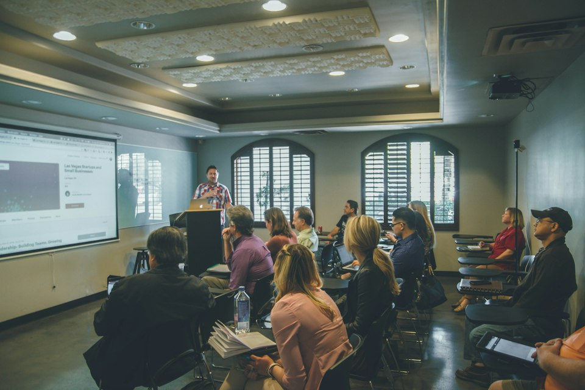

01
01
Formación y especialización
Cursos de actualización, talleres, seminarios y programas para fortalecer conocimientos técnicos y profesionales.
CONGRESO ECONÓMICO DE PROFESIONALES Y TÉCNICOS – COEPROTEC
Creamos espacios de capacitación y encuentro para profesionales, técnicos y organizaciones que quieren llevar lo aprendido a la práctica.
PRESENTACIÓN OFICIAL · EDICIÓN 2026
Descubre nuestro material audiovisual oficial de presentación para la edición 2026 del Congreso Económico de Profesionales y Técnicos – COEPROTEC.
El video se reproduce automáticamente en modo silencioso cuando el navegador lo permite; puedes activar el audio, pausarlo o reiniciar la reproducción desde los controles integrados.
SOBRE COEPROTEC
COEPROTEC es una iniciativa orientada a la formación continua, la capacitación técnica y profesional y la creación de espacios de encuentro entre especialistas, estudiantes, empresas e instituciones.
Promovemos experiencias de aprendizaje, diálogo y colaboración que acercan el conocimiento especializado a necesidades reales y fortalecen el desarrollo profesional.
Conectamos personas y organizaciones interesadas en actualizar sus conocimientos, compartir experiencias y construir nuevas oportunidades de cooperación.
QUÉ HACEMOS
Formatos flexibles para personas e instituciones. Cada propuesta se define según sus objetivos y alcance.
01
Cursos de actualización, talleres, seminarios y programas para fortalecer conocimientos técnicos y profesionales.
Conferencias, congresos y espacios de diálogo donde especialistas y participantes intercambian ideas y experiencias.
Propuestas de formación corporativa e institucional adaptadas a las necesidades de cada organización.

04Apoyo en contenidos, diseño de programas y proyectos de aprendizaje en modalidades presenciales o virtuales.
Fotografías de carácter ilustrativo (licencia abierta Unsplash).
TRAYECTORIA · ARCHIVO 2025
El archivo institucional del proyecto conserva la memoria del Primer Congreso Económico de Profesionales y Técnicos bajo el tema «Perú en Crecimiento: Obras por Impuestos».
AGENDA COEPROTEC
Aquí encontrarás los próximos eventos organizados por COEPROTEC y actividades de instituciones aliadas, con sus fechas, programas y enlaces de participación cuando sean anunciados.
Ver agenda completaEncuentro académico de la Escuela de Postgrado UPC, con mesas sobre contratación por emergencia y retos de las Obras por Impuestos. COEPROTEC figura entre los auspiciadores del afiche.
Ver agenda y detalles ↗TRABAJEMOS JUNTOS
Si deseas proponer un tema, organizar una actividad, solicitar formación para tu equipo u ofrecer una alianza, conversemos. Cuéntanos qué necesitas y te orientaremos por nuestro canal de contacto.
Proponer una colaboraciónPRERREGISTRO INSTITUCIONAL · COMUNIDAD COEPROTEC
Recibe información oportuna sobre próximos eventos, ponencias, agenda e inscripciones del Congreso Económico de Profesionales y Técnicos – COEPROTEC.
El formulario web de prerregistro se habilitará próximamente tras completar las validaciones legales y técnicas. Mientras tanto, nuestro equipo atiende todas las solicitudes directamente por nuestros canales oficiales.
No se recopilan ni almacenan datos personales en esta web mientras el prerregistro en línea permanece en estado «Próximamente».
MANTENGAMOS EL CONTACTO
Consulta por eventos, capacitación o posibilidades de colaboración. Escríbenos directamente por WhatsApp.
Escríbenos por WhatsApp